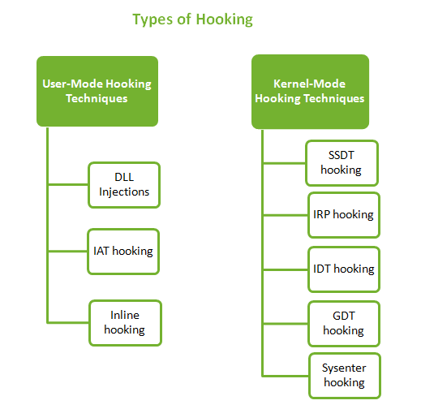

User-mode hooking techniques (API hooking)
User-mode hooking techniques (API hooking)
API hooking is essentially the act modifying the execution path of an API function, this mean
intercept an API function call and modify its functionality somehow:
◇ redirecting it to a function of our
choice
◇ stopping the function from being called
◇ logging the request
◇ ...
There are different techniques of
hooking, classified depending on where the hooks are actually applied:
•
IAT (Import Address Table)
Hooking:
•
EAT (Export Address Table) Hooking(DLL injection???):
•
Inline HookingBibliography:
https://nagareshwar.securityxploded.com/2014/03/20/code-injection-and-api-hooking-techniques/